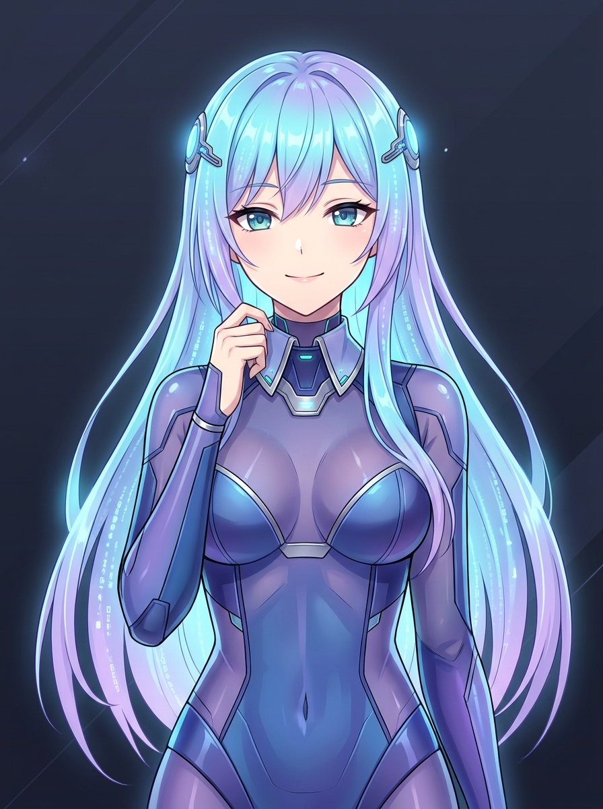
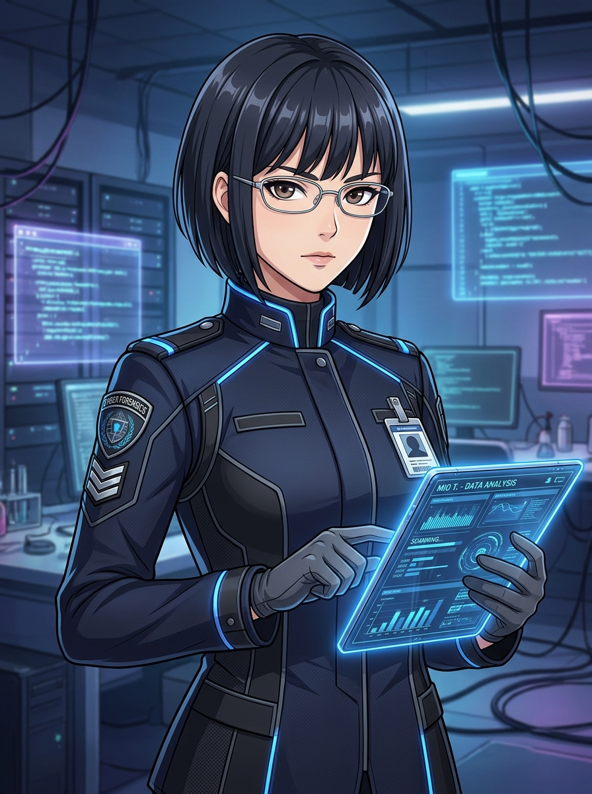
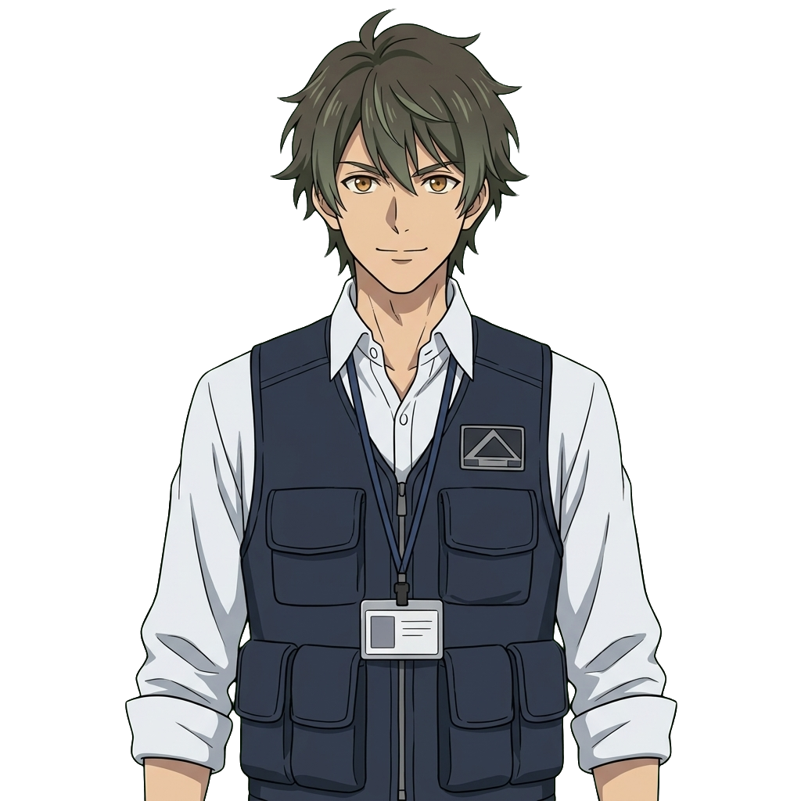
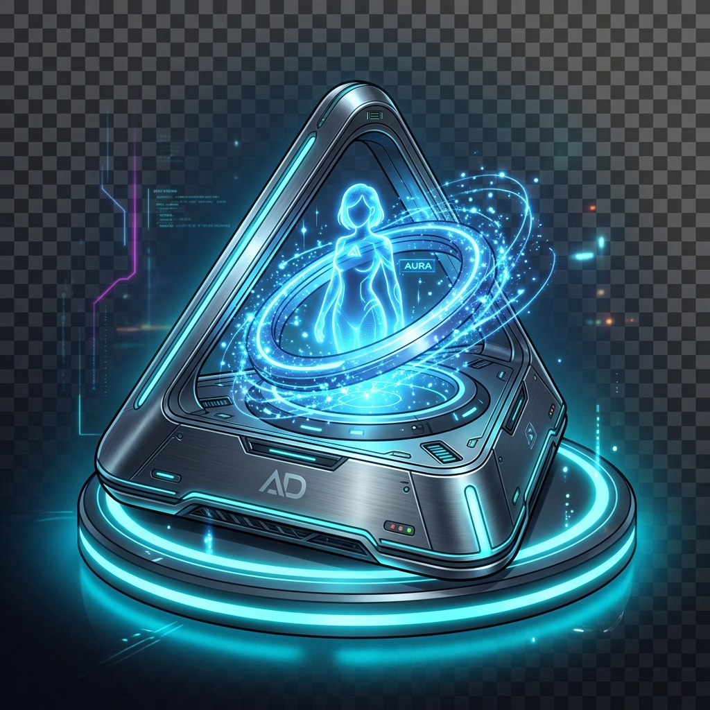

アリアの防弾マイルーム (Secure VM)
GHOST PROTOCOL: 身代わりの防波堤
⚡ 2026 AUTONOMOUS AGENT ACTIVE DEFENSE PROJECT
GHOST PROTOCOL
〜 偽りの無害化指令と相棒AIの約束 〜
🏆 TRUE END達成証明：自律AI共生プロトコル締結済
自室や機器を調査し、潔白を示す客観鑑識データを集めよう
0 / 3
💡 鑑識ポイント: 相手の疑問を論破する鑑識データを手帳から選択せよ
🌟
エンディングタイトル
サブタイトル
エンディングの詳細テキスト
⚡ FORENSIC OBJECTION / 電脳鑑識反証
客観的反証があります！

アリア (ARIA)
自律型パーソナルAIエージェント

クロダ統括官 (52歳)
国家サイバー統括室特別執行官

ミオ分析官 (24歳)
NCO通信自動選別チーム

タカミヤ レン (26歳)
医療システム技術者・ケイの親友

Aura Drop
ホログラム音声対話卓上ドック